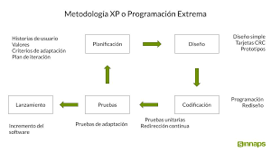

La metodología ágil es un conjunto de técnicas aplicadas en ciclos de trabajo cortos,
con el objetivo de que el proceso de entrega de un proyecto sea más eficiente.
Así, con cada etapa completada,
ya se pueden entregar avances y se deja de lado la necesidad de esperar hasta el término del proyecto
El método de cascada es un enfoque tradicional y lineal del desarrollo de software.
En esta metodología, los proyectos se completan en distintas fases, y cada fase depende de la finalización de la anterior.
Scrum es uno de los métodos de gestión de proyectos ágiles más populares y se adapta bien al desarrollo iterativo e incremental de productos.
En un equipo de scrum, los proyectos se dividen en sprints, o periodos cortos de tiempo (normalmente de dos a cuatro semanas) durante los cuales deben cumplirse objetivos específicos.
Al final de cada sprint, el equipo evalúa su progreso y
ajusta sus planes para el siguiente sprint en consecuencia.
Kanban es un enfoque ajustado del desarrollo de software que hace hincapié en la entrega continua y la colaboración.
En Kanban, los equipos visualizan su trabajo mediante un tablero Kanban, que les ayuda a identificar los cuellos de botella y a optimizar su flujo de trabajo.
La programación extrema (XP) es una metodología ágil que hace hincapié en la importancia de los comentarios del cliente y la colaboración.
 La metodología ágil Crystal se basa en la idea de que no existe un enfoque único para el desarrollo de software.
Consiste en metodologías de desarrollo ágil más pequeñas que comprenden Crystal Yellow, Crystal Clear, Crystal Red, Crystal Orange, etc.
El desarrollo orientado a las características es un enfoque iterativo e incremental que se centra en la entrega de características.
En el FDD, los equipos identifican primero las características clave de un producto y luego crean un plan de desarrollo que prioriza estas características.
La metodología de desarrollo de software Lean se basa en los principios del Sistema de Producción Toyota.
En este enfoque, los equipos se esfuerzan por eliminar los residuos y optimizar el valor a lo largo del proceso de desarrollo de software.
Esto puede lograrse mediante técnicas como la entrega continua, la toma de decisiones en colaboración y la retroalimentación del cliente.